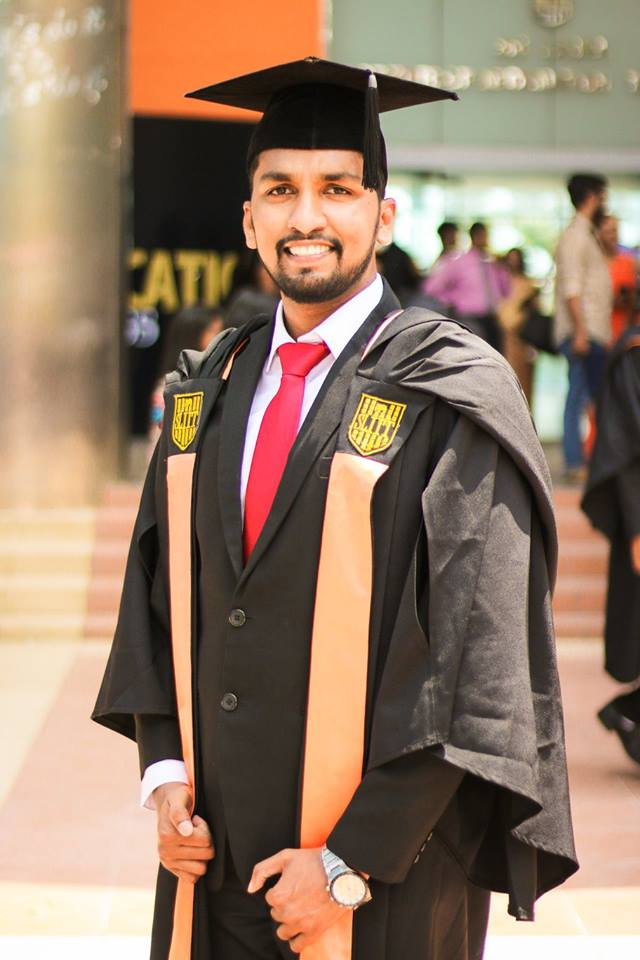

SUCCESS IS NO ACCIDENT.It is hard work,perseverance,learning,studying,sacrifice and most of all,Love of what you are doing.
YASISURU WIJESOORIYA
PERSONAL DETAILS
Date of Birth: 21st April 1992
Gender : Male
Civil Status : Single
Nationality : Sri Lankan
Nic : 921123647V
CONTACTS
Email:14560040yashan@gmail.com
TEL:+81-080-4390-1489


Current Address:
602-8377 Ichijo Shimoto
Higashitatecho
Onmae-dori
Kamigyo-ku
KyotoPROFESSIONAL GOAL
A Career in Mechanical Engineering that involves coordinating and training skills.
PROFILE
I am a dedicated, hardworking and proactive Mechanical Engineer with strong background in design, plant operations, supervise and lead all Maintenance Processes. I have work experience as a mechanical engineer around 4.0 years.
OBJECTIVE
Seeking a position to utilize my skills and abilities in the engineering or any related industry that offers professional growth while being resourceful, innovative and flexible. I would like to give my best to your company while gaining professional experience for me.
- Sri Lanka Institute of Information Technology (SLIIT) 2014-2018
BSc. (Hons) in Mechanical Engineering Degree
- Japanese Language Course - NAT Certificates N4, N3 (from 06/2019 to 01/2020)
- University of Moratuwa -2020 (Intake 16)
Certificate course -PLC System - Studing in The Kyoto College Of Graduate Studies For Informatics(M.s.c)-From 2022 To Link
EDUCATION
WORK EXPERIENCE
Venture Properties Engineering Sri Lanka
I worked as a MEP engineer around 2 years in Hospital Base project in Medirigiriya from 02/09/2020 to 24/02/2022.
Tropic Fishery (Pvt) Ltd., Negombo
Tropic Fishery company is a Fish Freeze and Export Company. I worked as a Maintenance Engineer from 03/01/2018 to 26/08/2020
- Planed and managed all repairs and instrument activities as well as Supervised and Led all Maintenance Processes and Operations.
- Maintained reports/check list on daily machine maintenance activities. Machines-Brine freezers, Plate Freezers, Flack Ice machines, Nitrogen Freezer, Generators and company Air Condition System
PROJECTS
- Medirigiriya Base Hospital Project(in srilanka)
- Construct/Develop achine/Mechanism for Electrical Power Generation by tidal Waves. (Final year Project)
- Hybrid bike - Was involved in a hybrid bike project regarding the structural design and analysis of the bike. (Comprehensive Automobile Design Project)
ADDITIONAL SKILLS
Familiar
programming
languageMATLAB , C programming , JAVA , PLC Programming Familiar with
Mechanical Drawing
using SoftwareSolid Works,Auto Cad,Festo Fluids Languages Fluent in Sinhala, English and Japanese (N3 Level) Personal skills Effective communication,Leadership Skills,Teamwork
EXTRA CURRICULER AND VOLUNTARY ACTIVITIES
- University (August 2014 Present) - Member at Chess team & Football Team.
- School - Member of the Astronomical Society – 2011
- Played Badminton of the school team.
- Interests – Magic’s, Football, Chess and Badmin,Watching Film,Travelling
My most favourite movie -Intersteller
My hobbie as a Magician
NON RELATED REFEREES
Dr. Malika perera
B.Sc.(Hons)(Moratuwa),PhD(UK,Lboro) Senior Lecturer,
Dept. of Mechanical Engineering,SLIIT
New Kandy Road, Malabe.
Project Manager,
Bently CAE project.
Mobile: +94-77-274-0624
E-mail:malika.p@sliit.lk
Dr. S. P. Wijewardene
B.Sc.(Hons)(Moratuwa), PhD(USA)
Senior Lecturer,
Dept. of Mechanical Engineering,SLIIT
New Kandy Road, Malabe.
Mobile: +94-71-313-9369
E-mail:Samantha.w@sliit.lk
I do hereby certify that the above mentioned particulars are true and accurate to the best of my knowledge.